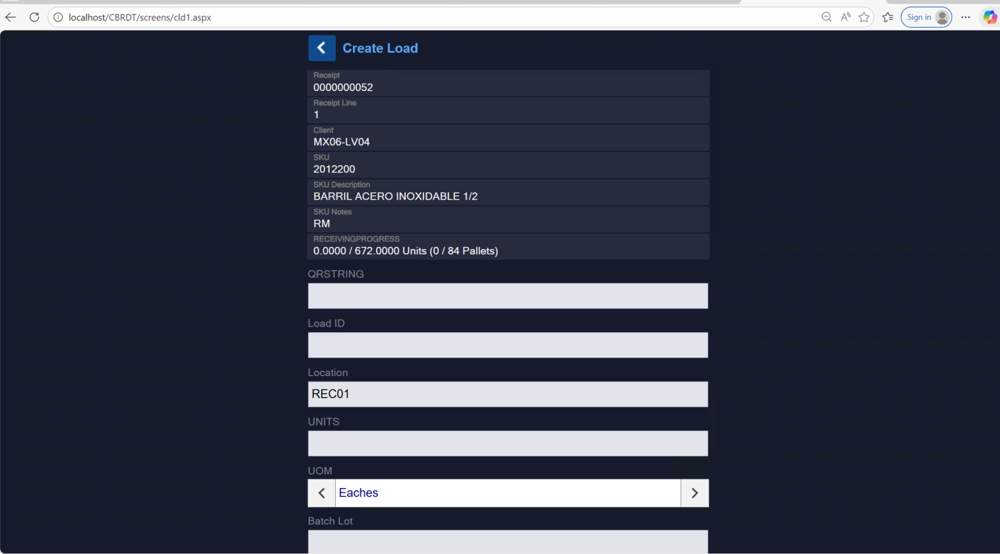
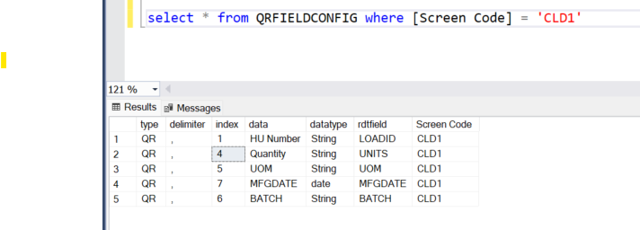

QRString Configuration – Create Load (CLD1)
Overview
On the Create Load (CLD1) RDT screen, a new field QRString was added.
The purpose of this field is to allow users to scan or manually enter a comma-delimited string that contains multiple field values in a single input.
These values are dynamically mapped to screen fields based on configuration in the QRFIELDCONFIG table in the App database.
CLD1 Screen

QRFieldConfig Table

Screen: Create Load (CLD1)
QRString is entered by the user before processing.
Example screen fields that can be populated via QRString for Create Load Screen:
- Load ID
- Units
- UOM
- MFG Date
- Batch
Database Configuration – QRFIELDCONFIG
QR parsing behavior is fully driven by the QRFIELDCONFIG table.
Example query:
select * from QRFIELDCONFIG where [Screen Code] = 'CLD1'
Example Configuration
| index | rdtfield | datatype |
|---|---|---|
| 1 | LOADID | String |
| 4 | UNITS | String |
| 5 | UOM | String |
| 7 | MFGDATE | date |
| 6 | BATCH | String |
The index column determines which position in the QR string maps to which screen field.
QRString Format
Full QR Example
100001,10,EA,20260220,BAT101
Maps to:
| Field | Value |
|---|---|
| LoadId | 100001 |
| Units | 10 |
| UOM | EA |
| MFGDATE | 20260220 |
| Batch | BAT101 |
Partial QR Example
100001,10,EA,,
User may leave values empty using delimiters.
Empty values are still processed based on index position. We can Add required validations in the code if necessary.
Code Integration – CLD1.aspx.vb
In CLD1.aspx.vb, inside doNext():
MobileUtils.ParseQRStringToFields(DO1, DO1.Value("QRSTRING"), "CLD1")
DO1.Value("QRSTRING") = ""
MobileUtils.PopulateQRFields(DO1)
Execution Flow
- Parse QRString
- Clear QRSTRING field
- Repopulate fields from session storage
MobileUtils Implementation
Parse Function
Public Shared Sub ParseQRStringToFields(ByRef pDO As Made4Net.Mobile.WebCtrls.DataObject, qrstring As String, screenCode As String)
What This Function Does
- Validates QR string
- Reads QRFIELDCONFIG for the screen
- Splits QR string using configured delimiter
- Maps values by index
- Converts dates (if datatype = date)
- Assigns values to DataObject (DO1)
- Stores parsed values in Session dictionary
Date Conversion Logic
If datatype = date and value length = 8:
Input format:
ddMMyyyy
Converted to:
MM/dd/yyyy
Example:
20260220 → 02/20/2026
Session Storage
Parsed values are stored in session:
HttpContext.Current.Session("QRParsedFields")
Stored as:
Dictionary(Of String, String)
Example:
{
"LOADID" : "100001",
"UNITS" : "10",
"UOM" : "EA"
}
Populate Function
Public Shared Sub PopulateQRFields(ByRef pDO As Made4Net.Mobile.WebCtrls.DataObject)
What It Does
- Reads session dictionary
- Assigns values back to DO1
- Clears session after use
HttpContext.Current.Session.Remove("QRParsedFields")
End-to-End Flow
- User enters/scans QRString
- System reads QRFIELDCONFIG
- Values split by delimiter
- Values mapped using index
- Date conversion applied if needed
- Fields assigned to DO1
- Values stored in session
- values auto-populated to Do1 object
- Session cleared
Summary
The QRString implementation allows flexible, configuration-driven field population on mobile screens using a single scanned input.
All mapping logic is controlled from the QRFIELDCONFIG table, making it reusable across multiple mobile screens.